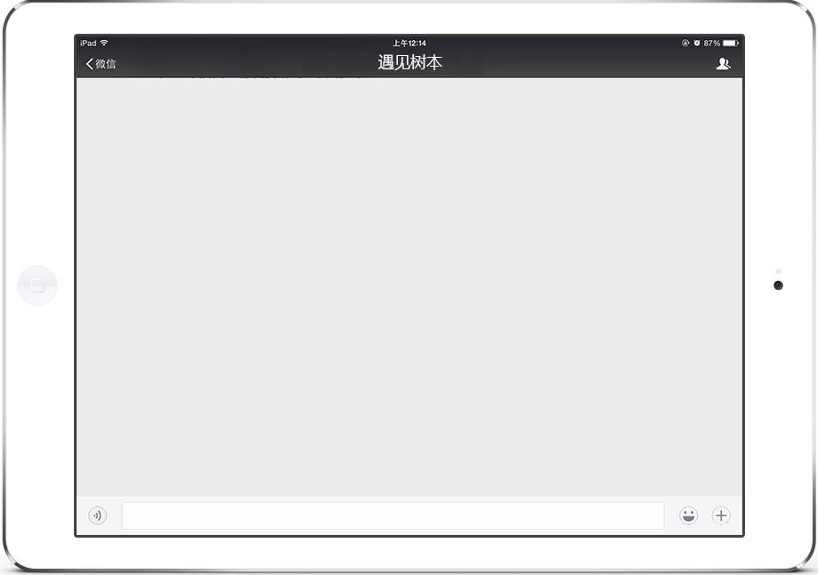

 维斯
维斯
锦华
目前我们已经吸引了一批喜欢在树本学习技能，提升自我和结交朋友的服务对象。
维斯
我们兴趣小组已经初步发展起来了，成立了自己管理的队伍，也有了树本社区议事厅的社区领袖和我们一起推动服务的发展。
楚侨
我们有现在的成绩离不开社工局领导、服务对象、社区领袖和广大合作伙伴的支持和帮助。
庆杨
我们把他们都拉进群来吧，群策群力，一起实践公益
楚侨
传播公益
众人
我们在树本等你！
来吧各位充满爱心的亲们，树本需要你们，听说社工给我新开发了一个“发红包”的功能，还要在今晚进行测试哦，亲们快到碗里来，We’re 伐木累！